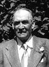

fiche familiale
*******************************************************************************
|  |
Louis Beaudoin décède à l'âge de 78 ans. Naissance le 2 novembre 1875 à Ste-Cécile-de-Masham (La Pêche) Baptême le 2 novembre 1875 à Ste-Cécile-de-Masham (La Pêche) Baptisé Georges, Jérémie, Louis. Parrain Georges Beaudoin, marraine Adèle Beaudoin. Occupation: Cultivateur, Maraîcher. Décès le 1er août 1954 à St-Laurent, Montréal. Père: François-Xavier Baudoin Beaudoin Mère: Marie-Clothilde Braseau Brazeau (sa famille) |
Âge de l'époux 26 ans, âge de l'épouse 22 ans.
 |
Épouse: Albina Vaillancourt décède à l'âge de 85 ans. Naissance le 22 février 1880. Décès le 2 juillet 1965 à Carlsbad-Springs, ON. Maraîchère, elle se rendait régulièrement au marché "BY" d'Ottawa pour y vendre ses produits: fleurs, fruits, légumes, etc. Père: Louis Vaillancourt Mère: Philomène Lamothe (sa famille) |
| |
Enfant 1 Aubert Beaudoin décède à l'âge de 70 ans. Naissance le 24 février 1903 à Ste-Cécile-de-Masham. Décès le 8 décembre 1973 Mariage le 15 juillet 1943 à St-Paul d'Aylmer. Conjointe: Laurencia Archambault Père: Georges Archambault Mère: Azilda Aubin Enfant 1 Lise Beaudoin m. 10 oct 1966 à St-Paul d'Aylmer. Conjoint: Gilles Bisson |
| |
Enfant 2 Léo Beaudoin décède à l'âge de 82 ans. Naissance le 26 décembre 1904 à Ottawa. Baptême le 26 décembre 1904 à Notre-Dame d'Ottawa. Décès le 29 août 1987 à l'hôpital Montfort d'Ottawa. Funérailles le 2 septembre 1987 à l'église Sacré-Coeur d'Ottawa Sépulture au cimetière Notre-Dame de Hull Occupation: Frère missionnaire. Frère Oblat de Marie Immaculée de 1924 à 1987. Missionnaire chez les amérindiens de la Baie James, principalement à Fort Albany, Lac Sainte-Anne et à Moosonee de 1926 à 1982. Très ingénieux il conçu et construisit un barrage électrique, un navire la goélette Notre-Dame-de-l'Espérance de 15 x 5 m, avec un mât de 10 m, d'une capacité de 25 tonnes équipé d'un moteur de 160 forces. Ses funérailles furent présidées par Mgr Jules Leguerrier, évêque de Moosonee, parmi l'assistance nombreuse de trouvaient une soixantaine d'Amérindiens, venus de Moosonee et d'ailleurs. |
Enfant 3 Cézaire Beaudoin
décède à l'âge de 25 ans.
Naissance le 28 février 1906 à Eastview, ON.
Décès le 8 juillet 1931
-------------------------------------------------------------------------------
Enfant 4 Marie Beaudoin
décède à la naissance.
Naissance en 1907 à Eastview, ON.
Décès en 1907 à Eastview, ON.
-------------------------------------------------------------------------------
Enfant 5 Martine (Mathilde) Beaudoin
décède à l'âge de 74 ans.
Naissance le 14 septembre 1908 à Eastview, ON.
Décès le 23 avril 1983.
Mariage le 14 septembre 1962 à St-Joseph de Hull.
Conjoint: Roméo Lanthier
Père: Omer Lanthier
Mère: Aurore Larose
de St-Grégoire-de-Nazianze de Buckingham, cté Papineau
-------------------------------------------------------------------------------
Enfant 6 Pierre Beaudoin
décède à l'âge de 70 ans.
Naissance le 17 juin 1910 à Piperville, ON.
Décès le 20 octobre 1980.
Mariage le 9 juillet 1935 à St-Laurent de Carlsbad-Springs
Conjointe: Odile Fortier
n. 20 oct 1910 d. 13 mars 2007 à Carlsbad-Springs
Père: Stanislas Fortier
Mère: Clara Sincennes
Enfant 1 Doris Beaudoin
m. 19 jul 1958 à St-Laurent de Carlsbad-Springs
Conjoint: Gaston Groulx d. 20 mars 1981
Enfant 2 Paul Beaudoin
Enfant 3 Pierrette Beaudoin
Conjoint: Shelton Witteker
-------------------------------------------------------------------------------
| |
Enfant 7 Rosario Beaudoin décède à l'âge de 91 ans. Naissance le 30 avril 1912 à Piperville, ON Décès le 4 mai 2003 à Montréal Inhumé le 7 mai 2003 au cimetière Notre-Dame-des-Neiges de Montréal Mariage le 29 juin 1939 à St-Bonaventure d'Ottawa 1ère conjointe: Germaine Gratton n. 23 juin 1906, d. 5 avril 1963 à Montréal Père: Joseph Gratton Mère: Exilia Lemay Enfant 1 Jean-Jacques Beaudoin n. 27 juin 1940 à Ottawa Enfant 2 Robert Beaudoin n. 16 déc. 1941 à Windsor, ON Enfant 3 Pierre Beaudoin n. 2 avril 1946 à Shawinigan Conjointe: Madeleine Gagnon Mariage en 1963. 2ème conjointe: Marie-Thérèse Allaire |
| |
Enfant 8 Ernest Beaudoin décède à l'âge de 96 ans. Naissance le 20 décembre 1913 à Piperville, ON. Décès le 3 août 2010 à Maison Notre-Dame de Richelieu. Funérailles le 7 août 2010 au couvent des Soeurs du Sacré-Coeur d'Ottawa Sépulture au cimetière Notre-Dame de Hull Occupation: Frère missionnaire. Frère Oblat de Marie Immaculée depuis 1936. Missionnaire à Baie James de 1947 à 1990 région de Moosonee, responsable de la construction de la Cathédrale de Moosonee et par la suite d'hôpitaux, d'écoles et résidences, puis de l'entretien des immeubles du Sanctuaire du Cap de la Madeleine. |
Enfant 9 Florent Beaudoin
décède à l'âge de 95 ans.
Naissance le 7 septembre 1915 à Piperville, ON.
Décès le 2 novembre 2010 à Carlsbad-Springs, ON.
Funérailles le 8 novembre 2010 à St-Laurent de Carlsbad-Springs
Sépulture au cimetière de Carlsbad-Springs
Mariage le 15 août 1939 à
St-Laurent de Carlsbad-Springs
Conjointe: Blanche Faubert
n. en 1920, d. 18 jan. 2011 à Carlsbad-Springs
Père: Rupert Faubert
Mère: Délia Laurin
Enfant 1 Huguette Beaudoin
Décède avant 2007
Conjoint: Moïse Lepage
Enfant 2 Claudette Beaudoin
Conjoint: Pière-Yves Dagenais
Enfant 3 Annette Beaudoin
Conjoint: Jean Marion
Enfant 4 Raymond Beaudoin
Conjointe: Denise Desjardins
Enfant 5 Diane Beaudoin
Conjoint: Marcel Labelle
Enfant 6 Jean Beaudoin
n. en 1957, d. 27 avril 2010
Conjointe: Ginette Payant
-------------------------------------------------------------------------------
Enfant 10 Joseph-René Beaudoin
décède à l'âge de 5 mois.
Naissance le 13 avril 1917 à Piperville, ON.
Décès en septembre 1917 à Piperville, ON.
-------------------------------------------------------------------------------
Enfant 11 Marie-Simonne Beaudoin
décède à l'âge de 61 ans.
Naissance le 6 septembre 1918 à Piperville, ON.
Décès le 23 décembre 1979.
Mariage le 12 juillet 1947 à St-Joseph de Hull.
conjoint: Gérald Girard
Père: Lionel Girard
Mère: Alberta Tessier
Enfant 1 Jacques Girard
m. en 1976 à Pointe-Gatineau
Conjointe: Lucie Lyrette
Enfant 2 Louise Girard
m. le 21 février 1976 à Lachenaie
Conjoint: Gilles Lanthier
Enfant 3 Luc Girard
m. en 1978 à Hull
Conjointe: Lucie Vézina
Enfant 4 Denis Girard
m. en mars 1981
Conjointe: Johanne Girard
-------------------------------------------------------------------------------
Enfant 12 Rose-De-Lima Beaudoin
décède à l'âge de 1 an.
Naissance le 14 septembre 1919 à Piperville, ON.
Décès le 4 janvier 1921 à Piperville, ON.
-------------------------------------------------------------------------------
| |
Enfant 13 Laurence Beaudoin décède à l'âge de 78 ans. Naissance le 17 février 1923 à Piperville, ON. Décès en 2002 à Gatineau. Mariage le 17 juin 1950 à St-Joseph de Hull. Conjoint: Robert Leblanc Père: Alyre Leblanc Mère: Annonciade Derouin Enfant 1 Claudette Leblanc Conjoint: Gilbert Jolin Enfant 2 Nicole Leblanc Conjoint: Yves Leblanc Enfant 3 Josette Leblanc |
| Page des ancêtres | Page précédente | Début de la page | Page d'accueil |